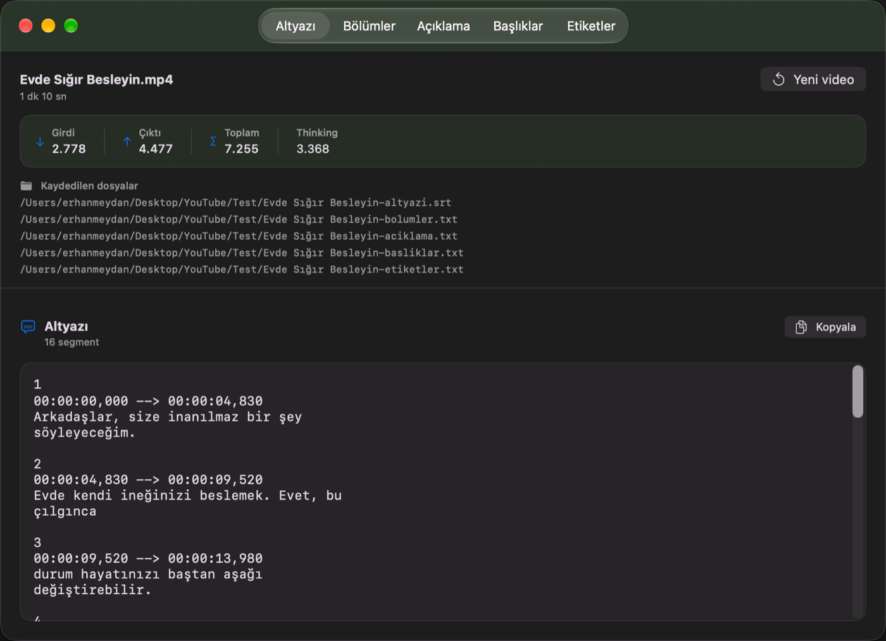
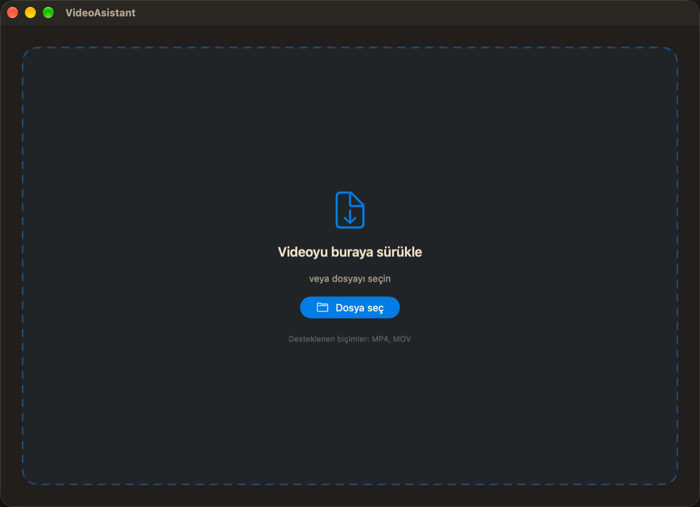
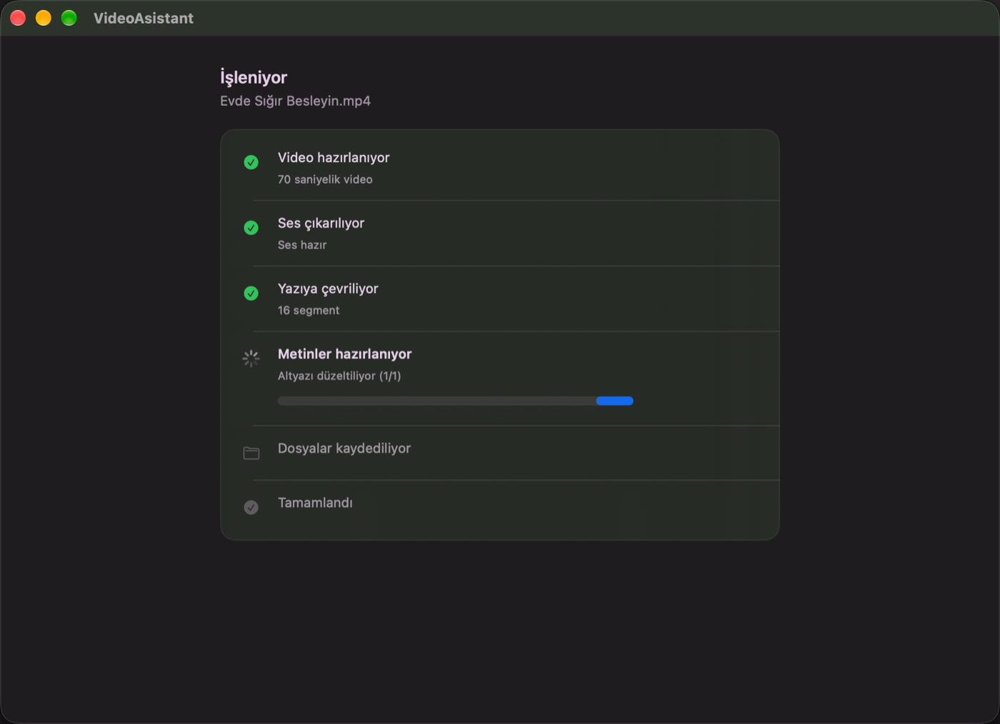

Her videoyu YouTube'a hazırlamak artık bir sürükleme.
Video döküşü tamamen bilgisayarında çalışır. Düzeltilmiş Türkçe altyazı, bölüm başlıkları, açıklama ve etiketler saniyeler içinde hazır.

Nasıl çalışır?
Beş adımda videonuz yayına hazır hale gelir.
Videoyu bırak
MP4 veya MOV dosyasını pencereye sürükle.
Ses çıkar
ffmpeg 16 kHz mono WAV dosyası üretir.
Yerel döküş
whisper.cpp Türkçe yazıya çevirir, internetsiz.
Metinleri üret
MiniMax M3.1 Flash üç ayrı çağrıda çalışır.
Kopyala ve kaydet
5 sekme, 5 dosya, tek tıkla panoya hazır.
Uygulamadan Görüntüler
Yerel macOS deneyimi için tasarlanmış temiz ve odaklanmış arayüz.


Çıktı Örnekleri
Tek bir işlemden elde edilen 5 farklı türde profesyonel içerik.
00:00:00,000 --> 00:00:04,830
Arkadaşlar, size inanılmaz bir şey söyleyeceğim.
2
00:00:04,830 --> 00:00:09,520
Evde kendi ineğinizi beslemek. Evet, bu çılgınca
Evde kendi ineğinizi beslemek, taze ve katkısız süt elde etmenin yanı sıra sürdürülebilir yaşama önemli bir katkı sağlayabilir. Doğru bakım ve uygun koşullar altında inekler uzun yıllar boyunca sizinle olabilir.
Kendi sütünüzü kullanarak neşkübü peynir, yoğurt ve daha fazla gıda üretebilir, üretim sürecini kontrol edebilirsiniz. Evde sığır beslemenin zorluklarını ve dikkat edilmesi gerekenleri bu videoda öğrenebilirsiniz.
Neden ayrı?
Bir geliştirici aracı hassasiyeti ve sadeliğiyle.
Zaman damgaları korunur
Model yalnızca metni düzeltir. Zamanlama Whisper çıktısından gelir, yapay zekâ dokunamaz.
Döküş tamamen yerelde
whisper.cpp çevrimdışı çalışır. İnternetten sadece düzeltilmiş metinler gider.
Gerçek token sayacı
Giriş ve çıktı tokenları API yanıtındaki kullanımdan okunur, tahmin edilmez.
Kurallar koda gömülü
İlk bölüm 00:00, en az 3 bölüm, bölümler arası en az 10 saniye gibi teknik kurallar katıdır.
Dosyalar yanına yazılır
Beş çıktı, videonun bulunduğu klasöre standart adlarla otomatik kaydedilir.
Uzun video da donmaz
İşlem arka planda yürür, arayüz her an yanıt verir, ilerleme adım adım izlenir.
Token kullanımı
70 saniyelik bir videonun gerçek işlem verileri.
Kurulum
Uygulamayı kullanmak için gerekli olan yerel bileşenleri kurun.
Araçları kurun
ffmpeg sesi çıkarır, whisper.cpp döküşü yapar.
brew install ffmpeg whisper.cpp
Whisper modelini indirin
Türkçe için large-v3-turbo modeli (~1,6 GB) kullanılır.
mkdir -p ~/Library/Application\ Support/VideoAsistant/models
curl -L -C - -o ~/Library/Application\ Support/VideoAsistant/models/ggml-large-v3-turbo.bin \
https://huggingface.co/ggerganov/whisper.cpp/resolve/main/ggml-large-v3-turbo.bin
Anahtarı girin
Uygulama ilk açılışta MiniMax API anahtarını ister ve macOS Keychain'e kaydeder.
export MINIMAX_API_KEY="..."